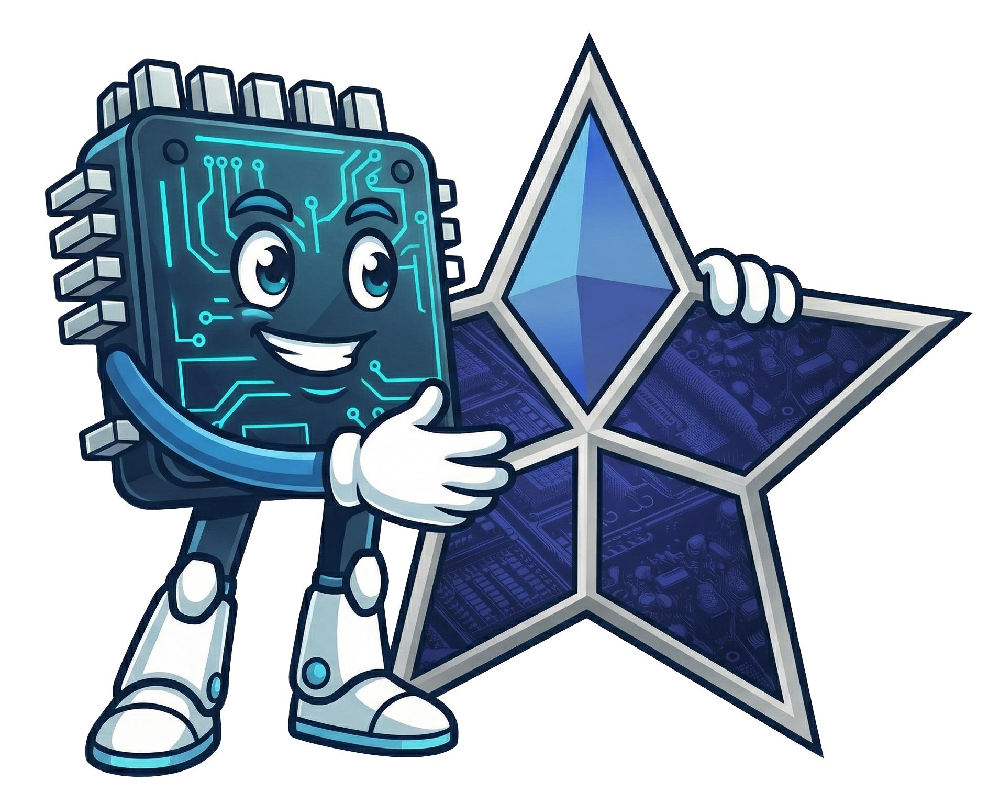
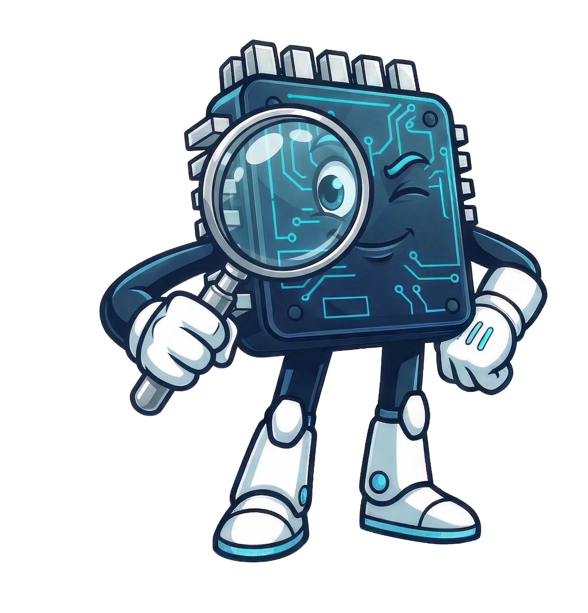
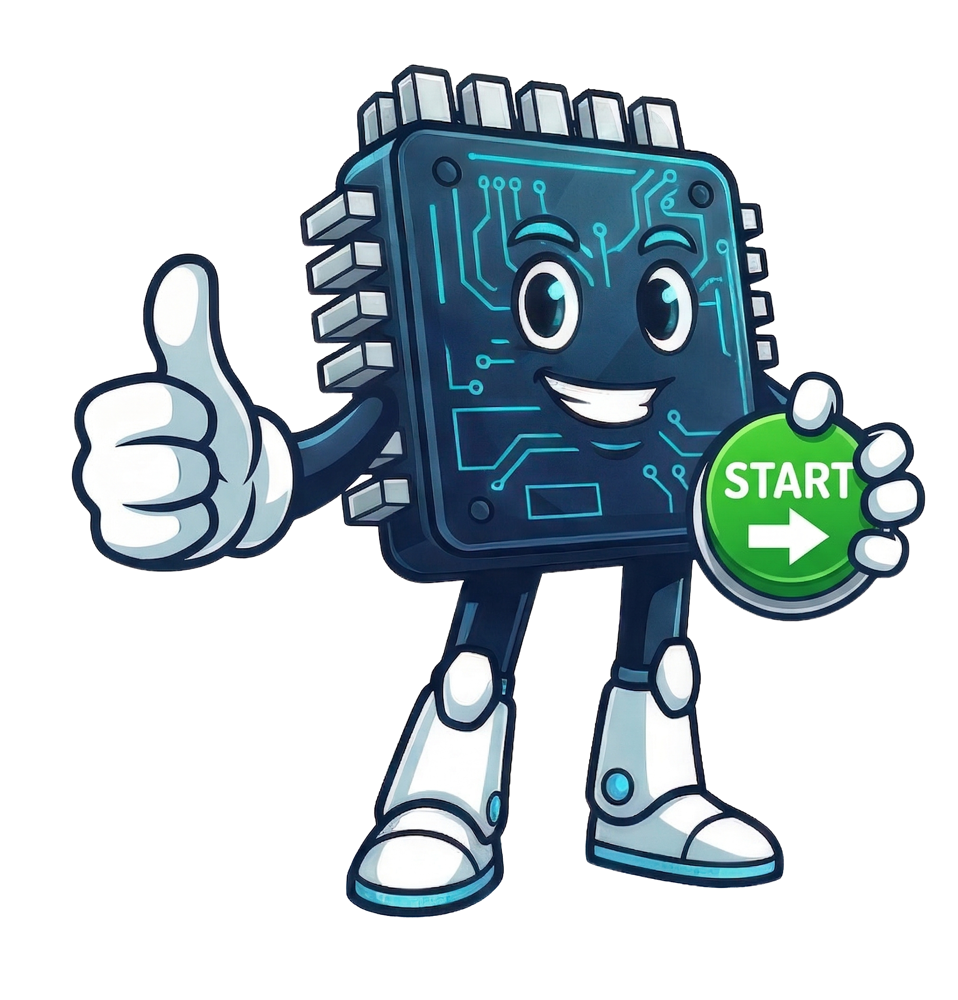

ИИ-помощник
для менеджеров по продажам

Мы запускаем первого ИИ-помощника прямо внутри Bitrix24.
Он будет глубоко анализировать клиента и давать менеджеру готовые рекомендации,
как лучше вести разговор.
Это первый этап многоуровневой системы. Мы начинаем с главного — глубокого понимания клиента. Дальше помощника можно будет развивать шаг за шагом.

Он анализирует:
По итогам ИИ готовит аналитическое резюме:
Помощник работает только в контексте текущей сделки. Всё очень точно и по делу.

Вместо того чтобы часами перечитывать историю, менеджер открывает резюме и сразу видит:
Это экономит время и делает каждый звонок или сообщение более точным и уверенным.
Менеджер готовится к звонку. Вместо разбора 15 сообщений и 3 записей разговора он за минуту читает ИИ-обзор: «Клиент беспокоится о сроках доставки, ценит личный подход. Рекомендуется начать с благодарности за доверие и сразу предложить варианты ускорения».
Результат — более качественные разговоры и меньше упущенных возможностей.

Благодаря этому мы сильно экономим на токенах ИИ — платим только за реальную пользу, а не за постоянную работу в фоне.
Это один из важных плюсов нашего подхода: разумный расход ресурсов при высокой точности.

Глубокий анализ клиента + профессиональные рекомендации перед разговором.
Систему можно развивать постепенно, по мере необходимости компании.
Это внутренний проект, который поможет команде работать проще и эффективнее.
Спасибо за внимание!
Готов ответить на любые вопросы.
